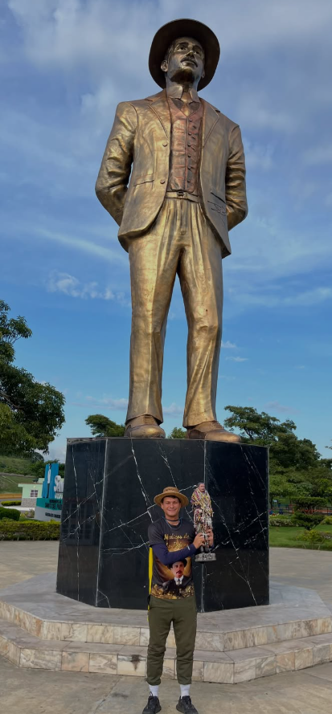

El origen de la promesa de Yeyson Paredes, conocido cariñosamente como el "Peregrino de San José Gregorio", nace de una profunda devoción a San José Gregorio Hernández y de un legado familiar impulsado por su abuela, quien también fue peregrina y sembró en él el amor por la fe y el servicio al prójimo.
Cada paso recorrido representa no solo el cumplimiento de una promesa espiritual, sino un acto de entrega por Venezuela, llevando consuelo, unión y oraciones por los enfermos y los más necesitados a lo largo de cada camino andado.

Déjale un mensaje a Yeyson
Comparte tu palabra de aliento, petición o testimonio.